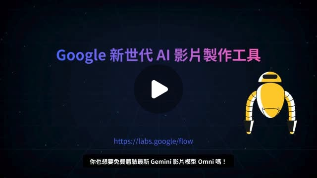

Google Flow × Omni × Veo｜從腳本、分鏡到 Flow TV 的 AI 影音創作工作流
來源是 Cynthia Teng（鄧君如）在 Threads 分享的 AI 影片製作貼文。貼文以「AI 影片製作，又向前邁進了一大步」開場，介紹 Google Flow 結合 Omni、Veo 與 Flow TV，讓影片腳本、分鏡、角色設定、剪輯與影音創作更容易被串成完整工作流。

一句話摘要
這則貼文值得收錄的重點不是單純「Google Flow 可以生影片」，而是把 Google Flow 視為一個 AI 影音創作工作台：以 Gemini / Omni 協助理解與對話式編輯，以 Veo 生成影片，以 Flow TV 學習 prompt 與鏡頭技法，再把腳本、分鏡、角色與剪輯流程串起來。
Threads 可擷取資訊
| 欄位 | 內容 |
|---|---|
| 作者 | Cynthia Teng（鄧君如） |
| 可見時間 | 7 小時前（擷取於 2026-07-28） |
| 可見互動 | 約 252 次瀏覽、3 讚、1 則回覆、6 分享/引用（畫面快照） |
| 主題 | Google Flow、Omni、Veo、Flow TV 與 AI 影音創作流程 |
| 貼文用途 | 介紹影片內容與《AI 超神應用術》中的 Google AI 應用主題 |
| 作者補充 | 留言提供博客來書籍連結；博客來頁面被 Cloudflare 擋住，改以碁峰官方頁與 Brave Search snippets 查核書籍資訊 |
| 配圖 | 影片封面顯示「Google 新世代 AI 影片製作工具」、`https://labs.google/flow`，字幕可見「你也想要免費體驗最新 Gemini 影片模型 Omni 嗎！」 |
官方查核：Google Flow 的定位
Google 官方 Blog《Introducing Flow: Google’s AI filmmaking tool designed for Veo》確認，Flow 是 Google 的 AI filmmaking tool，專為 Google 的進階模型設計，包含 Veo、Imagen 與 Gemini。官方描述的核心功能包含：
- 使用自然語言描述創作意圖，由 Gemini 協助提示更直覺；
- 使用 Veo 生成具電影感的 clips 與 scenes；
- 使用 Imagen 建立角色、物件或場景 ingredients；
- 透過 Camera Controls 控制鏡頭運動、角度與視角；
- 透過 Scenebuilder 編輯與延展既有鏡頭，讓動作、轉場與角色更連貫；
- 透過 Asset Management 管理 ingredients 與 prompts；
- 透過 Flow TV 觀看由 Veo 生成的 clips / channels / content，並學習背後 prompt 與技巧。
Google Flow 官方頁也顯示，目前 Flow 的模型面向已包含 Gemini Omni、Nano Banana 與 Veo 3.1。其中 Gemini Omni 被描述為可從真實或生成的 input reference 建立與編輯影片，重點在世界理解、多模態與對話式編輯；Veo 3.1 則強調影片品質、物理、真實感、prompt adherence 與原生音訊。
使用條件與限制
Google Flow Help 顯示，使用 Flow 需符合年齡、地區與訂閱條件；頁面列出 Google AI Plus、Google AI Pro、Google AI Ultra 等方案，並說明 Pro 可使用完整 Flow experience 與最新 Gemini Omni Flash，Ultra 取得更多 credits 與新實驗模型/進階功能。Workspace 指定方案也可取得每日 credits。
因此，貼文中的「免費體驗」應視為作者影片/課程語境或當下帳號可見體驗，不應直接解讀成所有地區、所有帳號、所有模型永久免費。實際可用性仍取決於：
- Google AI 訂閱方案；
- 地區與帳號年齡驗證；
- Flow credits 與 rate limit；
- 模型版本，例如 Omni / Omni Flash / Veo 3.1；
- Google 對生成內容的政策與浮水印規則。
對欒帥有用的 AI 影音工作流拆解
1. 先把影片當成「專案」，不是單支 prompt
Flow 的價值在於把影片創作拆成可控環節：
| 階段 | 主要任務 | 可用 AI 協助 |
|---|---|---|
| 企劃 | 產品/課程/品牌目的、受眾、CTA | Gemini 產出影片策略與訊息層級 |
| 腳本 | 開場 hook、敘事線、字幕 | Gemini / NotebookLM 整理素材與腳本 |
| 分鏡 | 每鏡畫面、角色、鏡頭運動 | Flow / Veo prompt 與 Camera Controls |
| 角色與素材 | 主角、品牌物件、場景 reference | Imagen / Nano Banana / Omni 建立 ingredients |
| 生成 | 多版 clips、短片段、連續鏡頭 | Veo / Omni 生成與編輯 |
| 剪輯 | 選鏡、銜接、節奏、音訊 | Flow Scenebuilder + 外部剪輯工具 |
| 驗收 | 事實、品牌、字幕、政策 | 人工檢查 + 來源回溯 |
2. Flow TV 可以當「prompt 觀摩教室」
官方說 Flow TV 可觀看由 Veo 生成的 clips、channels 與 content，並看到喜歡片段背後的 exact prompts and techniques。這很適合教學：不要只叫學員「寫 prompt」，而是讓他們比較不同鏡頭、不同光線、不同構圖與不同 movement prompt 如何影響結果。
3. 把 Google Flow 放進課程與行銷製作線
貼文提到產品行銷、品牌宣傳、教學課程、社群短影音。對欒帥而言，可落成三種可複用範本：
- **課程宣傳短片**：課程痛點 → 學習成果 → 講師/場景 → CTA。
- **AI 工具教學短片**：工具畫面 → 一句功能定位 → 三步示範 → 注意限制。
- **活動回顧短片**：活動照片/片段 → AI 生成過場 → 字幕摘要 → 下次報名提示。
書籍與課程脈絡
貼文提到《AI 超神應用術》會分享 Google Gemini、NotebookLM、Flow、Omni、Gemini Live 等最新 AI 應用。博客來連結在本次擷取時遇到 Cloudflare / 連線異常，但碁峰官方頁可查到相關新版書籍：
| 欄位 | 碁峰官方頁查核 |
|---|---|
| 書名 | AI超神應用術：Google Gemini × NotebookLM × Nano Banana × Omni × Flow × Gemini Live全解鎖（超級全能第三版） |
| 書號 | ACV049600 |
| 作者 | 鄧君如 總監製 / 文淵閣工作室 編著 |
| 出版日 | 2026-07-24 |
| ISBN | 9786264253857 |
| 定價 | 560 |
| 重點 | Google AI 家族、Gemini 3.5、AI 工作流、Omni 影音創作、Gemini × NotebookLM 整合、範例素材/提示詞/影音教學 |
這讓貼文不只是工具介紹，也是一個「Google AI 生態系教學素材」的發現來源。歸檔時以官方 Google Flow 文件為技術 canonical source，以碁峰頁作為書籍/課程脈絡佐證。
與既有知識庫的關聯
知識庫已有一篇「Google Veo 3 免費額度整理｜Opal、Flow、Gemini 三路徑與 440 支影片說法核對」，該文重點是額度與方案判讀；本篇則聚焦在 Flow / Omni / Veo / Flow TV 作為 AI 影音創作流程的教學與工作流架構，因此建立為新文章，不與額度文合併。
判讀限制
- Threads 原貼是影片/書籍宣傳貼文；未登入情境下未取得完整影片逐字稿，只能保存主文、留言連結與影片封面資訊。
- 配圖顯示「Gemini 影片模型 Omni」與 `labs.google/flow`，官方 Flow 頁確認 Gemini Omni 存在於 Flow 模型面向；但本文未登入測試 Omni 實際可用性。
- Google Flow 的功能、模型與 credits 會依地區、帳號方案與 rollout 變動；本文以 2026-07-28 查核結果為準。
- 博客來商品頁在本次擷取時被 Cloudflare/連線異常阻擋；書籍資訊以碁峰官方頁與 Brave Search snippets 補強。
原始連結
- Threads：https://www.threads.com/@cynthia_teng/post/DbVLb7PjrBe
- Google Flow 官方頁：https://labs.google/flow/about
- Google Blog｜Introducing Flow：https://blog.google/innovation-and-ai/products/google-flow-veo-ai-filmmaking-tool/
- Google Flow Help：https://support.google.com/flow/answer/16353333?hl=en
- 碁峰書籍頁：https://www.gotop.com.tw/book/BookDetails.aspx?Types=v&bn=ACV049600
- 博客來分享連結：https://www.books.com.tw/products/0011057419?loc=P_0003_016